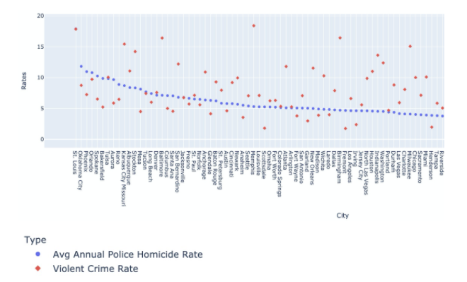
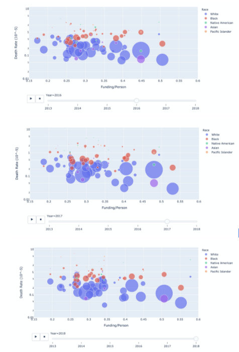
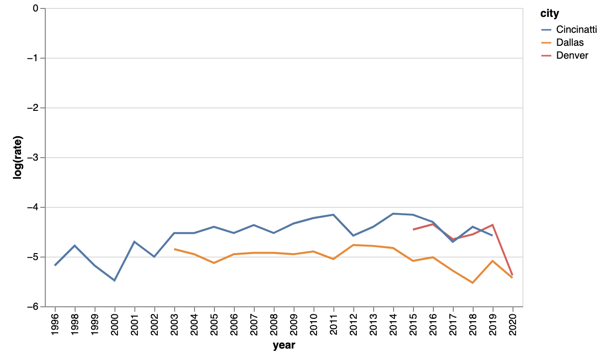

Before we examine the topic of police brutality in America, we must pay tribute to those who have lost their lives to police brutality. They are not just statistics, but rather individuals who fell victim to a system riddled with injustice. We must say their names.
High violent crime rate does not imply high police homicide rate
We can also examine the relationship between police funding and death rate. Over time, we see police funding increasing, but we don’t see any relationship between police funding and death rate.
Now, we examine specific policies and their associations with the police brutality rates in specific cities. These cities all implemented de-escalation policies in 2015.
From the graph, we can see an association between date of policy implemented and a slight decrease in the rate of police brutality incidents.
Examining the effects of multiple policies on police brutality.
Focusing on transparent from police forces. The lack of transparent police data that examines the effects of policies on police brutality rates does not allow us to make any causal assumptions of any relationships between policies or budgets and police brutality rates.
Some actions to remediate this issues are: